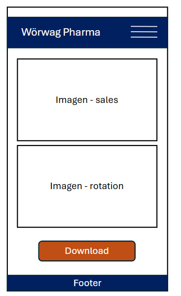
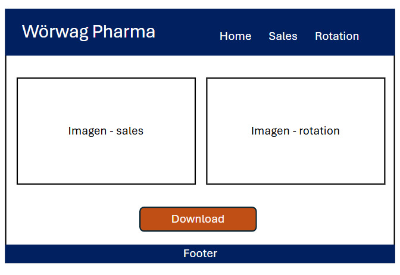

Wörwag Pharma (logo)
Sales & Rotation - The site will feature a simple interface for viewing sales and turnover reports submitted by customers on products. It will include a main summary page and subpages for each type of report..
Domain Name: worwag-internalsite.com
Site Purpose
It allows salespeople to view sales reports virtually and accessibly so they can meet quotas, as well as the turnover and inventory that suppliers send so they can know where the products are to direct medical prescriptions.
Scenarios
- What are the current monthly sales figures by region?
- What is the rotation and inventory of products per customer?
- Where can I download the report?
Color Scheme
- Primary Color (Dark Blue - #011638): headers, navigation bar and footer
- Accent Color (Green - #214E34): buttons, highlights and cards
- Background Color: #F5F5F5
Typography
- Roboto: Main font for body text and general content.
Wireframes
Mobile View
Desktop View
